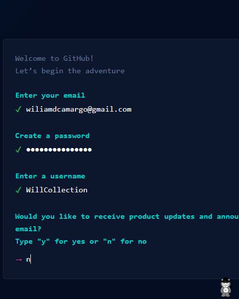
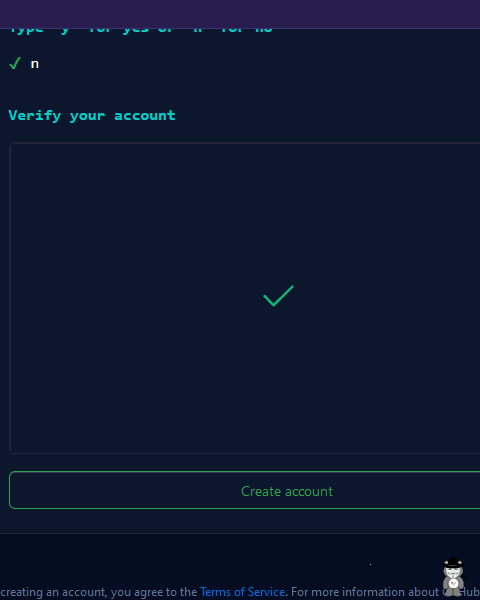
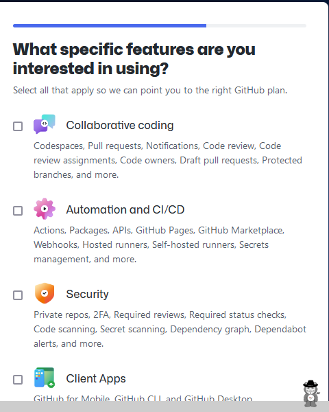

COMO CRIAR UMA CONTA NO GITHUB
1º Passo
Acesse o site do GitHub clicando aqui e clique em Sing Up no canto superior direito.

2º Passo
Preencha as informações de: E-mail; Senha; Apelido na plataforma; E se você quer receber e-mails sobre atualizações e anúncios;
3º Passo
Faça a verificação da sua conta para que o GitHub saiba que você é uma pessoa de verdade.

4º Passo
Depois que concluir a verificação, clique em Create account para seguir com a criação da conta.
5º Passo
Verifique o seu e-mail, pois você irá receber um código para fazer autenticação.
6º Passo
Selecione quantas pessoas irão trabalhar com você e se você é um estudante ou aluno.
7º Passo
Selecione os recursos que você está interessado em usar. Há varias opções e todas são bem interessantes.
8º Passo
Escolha qual versão você quer utilizar. Há a opção Free, mas também há a opção Pro

8.1º Passo (último)
Se você escolher pela versão Pro, você vai ter alguns benefícios adicionais enquanto for estudante.